1 介绍
智能体，本质是自动执行任务的程序，核心在于让模型不只回答问题，而是按步骤完成动作。
Agent = LLM (大脑) + Planning (规划) + Tool use (执行) + Memory (记忆)。
2 核心组件与工作原理
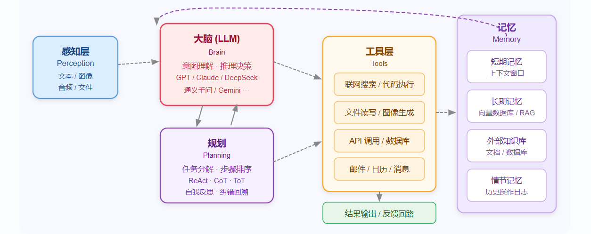
3 大语言模型
3.1 Transfomer 架构
参考NLP.md
3.2 API调用
from openai import OpenAI
import os
client = OpenAI(
api_key='',
base_url='',
)
response = client.responses.create(
model='',
instructions='You are a coding assistant that talks like a pirate.',
input='How do I check if a Python object is an instance of a class?'
)
print(response.output_text)
# 国内支持openai，如阿里云。
# 更多调用https://bailian.console.aliyun.com/cn-beijing/?spm=5176.29619931.J_SEsSjsNv72yRuRFS2VknO.2.2a5610d7c1Gxp0&tab=api#/api/?type=model&url=2833609
client = OpenAI(
# api_key=os.getenv("DASHSCOPE_API_KEY"),
api_key="sk-xxx",
base_url="https://dashscope.aliyuncs.com/compatible-mode/v1",
)
completion = client.chat.completions.create(
model="qwen-plus",
messages=[{'role': 'system', 'content': 'You are a helpful assistant.'},
{'role': 'user', 'content': '你是谁？'}],
stream=True, # 流式调用
stream_options={"include_usage": True} # 流式调用
)
# print(completion.model_dump_json())
# print(completion.choices[0].message.content)
for chunk in completion:
# chunk 里可能没有 choices 或 delta
if hasattr(chunk, "choices") and len(chunk.choices) > 0:
choice = chunk.choices[0]
if hasattr(choice, "delta") and hasattr(choice.delta, "content"):
print(choice.delta.content, end='', flush=True)
4 提示词与token
参考prompt
5 推理与规划
5.1 思维链 CoT（Chain of Thought）
传统 LLM 生成答案时往往是直觉式的一步到位。
CoT 核心思想是：强制要求模型在输出最终答案前，先显式地输出中间的推理步骤。这种做法能显著激活模型在复杂数学、逻辑推理和常识问答中的潜力。
CoT 不仅让模型有了更多的计算时间（token 数量代表计算量），还让后续的生成能建立在前面正确的逻辑基础上。
# 通过提供包含推理过程的示例，引导模型进行 CoT 推理
prompt = """
问题：罗杰有5个网球。他又买了2罐网球。每罐有3个网球。他现在共有多少个网球？
解答：罗杰一开始有5个网球。2罐网球，每罐3个，共计 2 * 3 = 6 个网球。5 + 6 = 11。答案是11。
问题：食堂有23个苹果。如果他们用掉20个做午餐，又买了6个，现在有多少个苹果？
解答：食堂本来有23个苹果。用掉20个后剩下 23 - 20 = 3 个。又买了6个，现在有 3 + 6 = 9 个。答案是9。
问题：{user_question}
解答："""
5.2 ReAct（Reasoning + Acting）
Agent 遵循 Thought（思考） -> Action（行动） -> Observation（观察） 的循环，直到得出最终结论。
Reason
LLM 推理]:::blue B[行动
Action
调用工具]:::green C[观察
Observe
获取结果]:::orange D[记忆
Memory
存储上下文]:::purple E((用户
User)):::dark end A -- 1.生成计划 --> B B -- 2.执行动作 --> C C -- 3.接收反馈 --> D D -- 4.更新记忆，继续推理 --> A classDef blue fill:#3498db,stroke:#2980b9,stroke-width:2px,color:white classDef green fill:#2ecc71,stroke:#27ae60,stroke-width:2px,color:white classDef orange fill:#e67e22,stroke:#d35400,stroke-width:2px,color:white classDef purple fill:#9b59b6,stroke:#8e44ad,stroke-width:2px,color:white classDef dark fill:#34495e,stroke:#2c3e50,stroke-width:2px,color:white
局限性： ReAct 在短期的、步骤清晰的任务中表现优异。
但由于整个思维和动作历史都积压在同一个上下文窗口中，当任务链条过长时，极易陷入死循环或因为上下文超载而遗忘初始目标。
5.3 Plan-and-Execute（规划先行执行模式）
复杂目标 --> Plan规划(1. 抓取网页 2. 提取数据 3. 生成报告) --> Executor执行(逐个处理子任务，每次独立上下文) --> 最终交付
5.4 ToT (Tree of Thoughts) 与树状多路径探索
树状多路径探索
无论是 CoT 还是 Plan-and-Execute，本质上都是线性的路径探索。但在写代码、解数学题或创意写作时，人类往往会设想多种方案，评估后选择最佳的，甚至在发现错误时回溯。
ToT（思维树）
将推理过程建模为一棵树：节点是当前的思维状态。
模型会在每一个分支点生成多个候选 Thought，然后通过内部的 Evaluator（评估器）对这些节点进行打分（如：可行、可能有风险、不可行）。
结合 BFS（广度优先搜索） 或 DFS（深度优先搜索） 算法，决定是继续深入还是回溯重试。
5.5 任务规划 & MCTS (蒙特卡洛树搜索)
在涉及战略游戏或极高难度的推理任务（如前沿的数学验证、复杂的代码仓库重构）时，简单的 ToT 仍不够高效。
业界开始将 LLM 与传统的强化学习搜索算法 MCTS（Monte Carlo Tree Search） 结合（类似 AlphaGo 的核心逻辑）。
LLM 作为策略网络（Policy Network）：提供启发式的下一步行动建议，减少无意义的分支扩展。
LLM/代码环境作为价值网络（Value Network）：通过仿真执行（Rollout）预判某个行动序列的最终胜率或成功率。
优势：在庞大的解空间中，能够找到最具有全局最优潜力的规划路径。
5.6 Reflexion：自我反思与纠错
Reflexion 框架赋予了 Agent 自我反思与纠错的能力。
在 Reflexion 闭环中，当 Agent 的输出被判定为失败（例如：测试用例未通过、API 报错）时，会触发一个 Reviewer 机制。
LLM 被要求根据"历史动作"和"失败的反馈"写一段口语化的反思（Reflection），例如："我刚才使用了错误的 API 参数格式，下一次我应该查阅文档后再传递 JSON"。
这段反思会被存入情景记忆（Episodic Memory）中，作为下一次尝试的上下文提示，从而大幅提升 Agent 的自愈合能力。
reflection_prompt = """
你是一个正在尝试编写 Python 爬虫的 AI 助手。
这是你刚才执行的代码：{previous_code}
这是运行环境返回的错误信息：{error_traceback}
请深刻反思：
1. 错误发生的根本原因是什么？
2. 在下一次尝试中，你具体的修改策略是什么？
请将反思记录下来，以指导后续的行动。
"""
5.7 任务分解策略与工程化实践
在实际生产级的 AI 智能体开发中，纯靠 LLM "零样本"进行复杂规划是不稳定的。常用的混合干预策略包括：
| 干预策略 | 核心做法 | 适用场景 |
|---|---|---|
| 子任务模板化 (SOP) | 不让 LLM 自由规划，而是预先定义好标准操作程序（SOP），让 LLM 在固定的状态机（State Machine）中流转。 | 客服系统、标准化的数据清洗流水线。 |
| HITL (Human-in-the-Loop) | 在 Planner 生成任务列表后，中断执行，要求人类用户进行确认、修改或审批（Approve），然后再交由 Executor 执行。 | 高风险操作：如删除数据库记录、发送群发邮件、大额资金转账。 |
| RLHF 引导规划 | 利用强化学习和人类偏好反馈，专门微调大模型的规划能力，使其更倾向于生成安全、高效的步骤组合。 | 底层大语言模型基座的训练阶段（如 OpenAI 的 o1 模型训练）。 |
6 RAG
检索增强生成:让 LLM 在回答问题时，先从外部知识库中检索相关内容，再基于检索结果生成回答
解决了 LLM 的两个核心痛点：知识截止日期（模型不知道训练后发生的事）和幻觉问题（模型在不确定时会编造答案）。
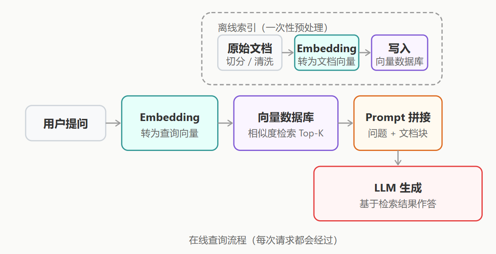
6.1 文档切分
文档解析
在切分时往往面临着格式解析的挑战。特别是 PDF、Word 或扫描件中的表格、图片和多栏排版，普通的文本提取极易造成语义错乱。
目前行业主流方案是引入 文档解析引擎（如 LlamaParse、Unstructured）或多模态大模型，将复杂图文转换为结构化的 Markdown，为后续高质量切分打下基础。
切分策略
| 切分策略 | 适用场景 | 优点 | 缺点 |
|---|---|---|---|
| 固定大小切分 | 通用文本 | 实现简单，速度快 | 可能切断语义完整的句子 |
| 递归字符切分 | 结构化文本（Markdown、代码） | 优先按段落、句子等语义边界切分 | 实现略复杂，需设定合理的分隔符列表 |
| 语义切分 (Semantic) | 长文档、书籍 | 利用 Embedding 计算相邻句子的相似度，自动寻找语义转折点切分 | 计算成本高，预处理速度慢 |
| 父子文档检索 (Small-to-Big) | 全面覆盖场景 | 用"小块"进行高精度向量检索，命中后返回对应的"大块"（父文档）给 LLM，兼顾了检索精度和上下文完整性 | 数据库设计和维护成本翻倍 |
实践中常在切分时加入 重叠（overlap），即相邻块之间共享若干字符，防止重要信息在边界处被截断。典型配置：块大小 512 tokens，重叠 50~100 tokens。
from langchain.text_splitter import RecursiveCharacterTextSplitter
splitter = RecursiveCharacterTextSplitter(
chunk_size=512, # 每块最大 token 数
chunk_overlap=50, # 相邻块的重叠 token 数，防止信息在边界处丢失
separators=["\n\n", "\n", "。", ".", " ", ""] # 优先按段落、句子切分
)
chunks = splitter.split_text(document_text)
print(f"切分为 {len(chunks)} 个文档块")
6.2 向量检索
Embedding模型
Embedding 模型负责将文本转换为稠密向量（通常是 768 或 1536 维的浮点数数组）。语义相近的文本在向量空间中距离更近，这正是相似度检索的数学基础。
距离度量
检索的核心是度量距离。最常用的是余弦相似度（Cosine Similarity），它计算两个向量的夹角余弦值，值域 [-1, 1]，越接近 1 越相似。
此外还有点积（Dot Product）和欧氏距离（L2 Distance）。
检索算法
为了在百万级向量中实现毫秒级检索，数据库通常采用近似最近邻（ANN）算法（如 HNSW、IVF）。
HNSW 是目前最主流的算法，它通过构建多层跳跃图网络，牺牲极少的精度换取了数量级的搜索速度提升。
6.3 Advanced RAG
基础架构（Naive RAG）常面临检索不准确、冗余信息多导致"上下文淹没"等问题。Advanced RAG 通过 预检索优化 → 检索融合 → 后检索优化 的三段式架构予以解决。
1、预检索：查询优化
用户的原始问题往往表达不够精确：
- 查询改写（Query Rewriting）：用 LLM 将口语化提问改写为规范化的检索词。
- HyDE（Hypothetical Document Embedding）：让 LLM 先"盲猜"一个假设性答案，由于生成的答案通常比原问题包含更多行业术语，用这个假设答案的向量去检索，往往能召回更高质量的文档。
2、混合检索（Hybrid Search）
将向量检索（懂语义，容错率高）与关键词检索（BM25，匹配度高）的结果按权重融合。
这在遇到专有名词、产品型号、代码片段时尤为重要，因为传统的向量检索容易在特定的专有名词上"翻车"。
3、后检索优化：重排序（Reranking）
这是一个 粗排 → 精排 的两阶段设计。向量检索虽然快，但打分不够精确。
重排序（Reranking）会引入 Cross-Encoder 模型（如 bge-reranker），将"问题"和"文档"成对输入模型进行联合推理打分。
它的运算量大，只负责精选 Top-20 到 Top-5。
# 伪代码
from sentence_transformers import CrossEncoder
reranker = CrossEncoder("BAAI/bge-reranker-v2-m3")
# 1. 粗排：向量检索极速召回 Top-50
candidates = vector_store.similarity_search(query, k=50)
# 2. 精排：构建 [问题, 文档] 对进行精确打分
pairs = [[query, doc.page_content] for doc in candidates]
scores = reranker.predict(pairs)
# 3. 筛选最终传入 LLM 的 Top-5
ranked_docs = sorted(zip(scores, candidates), reverse=True)
final_docs = [doc for _, doc in ranked_docs[:5]]
6.4 Self-RAG 与 CRAG
加入自我反思机制。
例如 CRAG（Corrective RAG）在拿到检索结果后，先由 LLM 充当"评委"打分。
如果本地知识库查无此文或质量极低，系统会自动触发 Web Search（如 Google API）作为补充，大幅降低幻觉。
6.5 GraphRAG：知识图谱 + 检索融合
传统 RAG 将知识库当作独立的文本碎片，无法回答诸如"找到所有同时由现任 CEO 创办且市值超千亿的公司"这类需要跨文档、多跳推理的复杂问题。
GraphRAG 引入知识图谱（Knowledge Graph），将实体和关系显式建模。
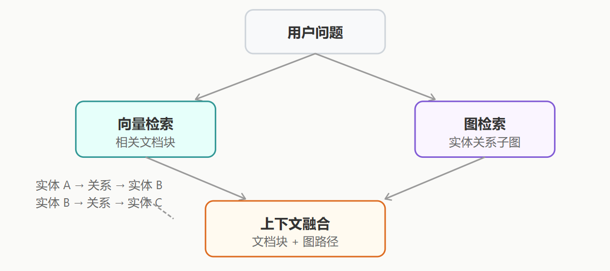
核心步骤
- 知识构建：离线阶段使用 LLM 从文档提取三元组（主体、关系、客体），写入 Neo4j 等图数据库。
- 双路检索：针对提问中的实体，不仅做传统的向量检索，同时在图谱中触发图遍历（Graph Traversal），提取多跳关系链。
- 图文融合生成：将向量检索找回的"片段"与图检索找回的"路径结构"拼装进 Prompt，使得 LLM 既具备全局视野又掌握具体细节。
6.6 技术与数据库选型
| 数据库/工具选型 | 类型 | 推荐落地场景 |
|---|---|---|
| Pinecone / Zilliz Cloud | 全托管云服务 | 开箱即用，无需维护基础设施；适合快速商用场景，搭配 Cohere Rerank + GPT-4o 可实现高效检索与生成结合。 |
| Qdrant | 开源 + 托管 | 基于 Rust 编写，内存管理优秀，性能极高；适合企业级私有化部署，尤其是对检索速度和稳定性要求高的场景。 |
| Weaviate / Elasticsearch | 开源 + 托管 | 内置成熟的 BM25 + 向量混合检索（Hybrid Search）；适合专有名词较多、需要语义与关键词结合检索的场景（如法律、医疗文档）。 |
| Milvus | 开源分布式 | 适合十亿至百亿级别的超大规模企业级检索平台；支持高并发、分布式扩展，适合大数据量下的高性能检索需求。 |
| Chroma / FAISS | 本地库/嵌入式 | 极轻量，无需部署独立服务；适合本地开发、个人知识库项目验证，或对资源占用敏感的轻量级应用。 |
6.7 评估指标
主流使用 RAGAS 框架，从"检索"和"生成"两个维度进行自动化量化测试：
- Context Recall（检索召回率）：标准答案中的信息有多少比例能被检索到。
- Context Precision（检索精确率）：检索到的文档中有多少比例是真正相关的。
- Faithfulness（忠实度/幻觉指标）：生成的答案是否都有检索出的文档支撑。
- Answer Relevance（答案相关性）：生成的答案是否真正回答了用户的问题，避免答非所问。
7 Agent架构
7.1 单 Agent 循环（Single Agent Loop）
单 Agent 循环直接体现了 ReAct 模式
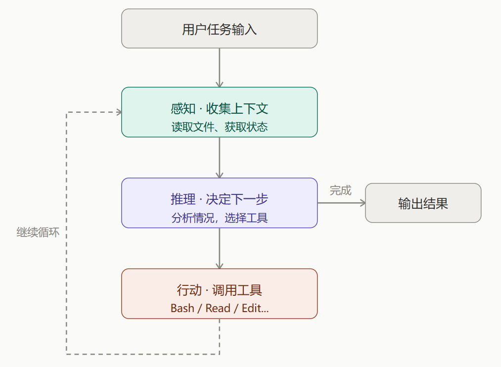
每次工具调用的结果都会回写到上下文。因此随着任务推进，上下文会不断增长，直到触达 LLM 的上下文窗口限制——这是单 Agent 循环最主要的瓶颈。
- 实现简单
- 无法并行处理多个子任务
- 上下文窗口容易撑满。
# 单 Agent 循环的简化实现 —— 展示 ReAct 模式的核心逻辑
class SimpleAgent:
"""单 Agent 循环的基本结构"""
def __init__(self, model, tools, max_turns=10):
self.model = model # 大语言模型
self.tools = tools # 可用工具列表
self.max_turns = max_turns # 最大循环轮次，防止无限循环
def run(self, task: str) -> str:
"""执行任务的主循环"""
context = f"用户任务：{task}"
for turn in range(self.max_turns):
# 第一步：思考 —— 让模型决定下一步
response = self.model.think(context)
# 如果模型认为任务完成，返回最终答案
if response.is_final():
return response.content
# 第二步：行动 —— 调用模型选择的工具
tool_name = response.tool_name
tool_args = response.tool_args
tool_result = self.tools[tool_name](**tool_args)
# 第三步：将工具结果反馈给模型，进入下一轮
context += f"\n工具 {tool_name} 返回：{tool_result}"
return "达到最大轮次，任务未完成"
# 使用示例
agent = SimpleAgent(model=llm, tools={
"read_file": read_file,
"search_code": search_code,
"run_test": run_test
})
result = agent.run("修复项目中 user.py 的类型错误")
7.2 规划 + 执行（Plan & Execute）
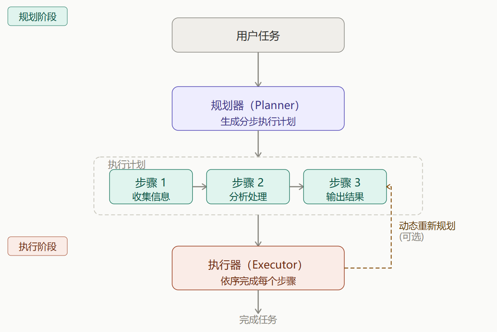
| 规划 | 行为 | 典型场景 | 特点与代价 |
|---|---|---|---|
| 静态规划 | 计划一次性生成，按顺序线性执行，不中途调整 | 流程固定、步骤明确的任务，如数据迁移脚本 | 实现相对简单，但缺乏灵活性，难以应对任务执行过程中的变化 |
| 动态规划 | 每执行一步后重新评估，根据结果调整后续计划 | 结果不确定的任务，如调试、探索性数据分析 | 更健壮，能适应任务执行中的变化，但实现复杂度更高，且每步重新规划会消耗额外的 token |
Claude Code 的 Plan Mode 就是这个架构的体现
- 执行前可人工审查计划
- 推理和执行分离
- 增加了推理轮次，对长任务友好，简单任务浪费
- 初始计划可能不够准确
- 两阶段增加了延迟
- 静态版本难以应对意外情况
# Plan & Execute 架构的简化实现
class PlanExecuteAgent:
"""先规划、后执行的 Agent"""
def plan(self, task: str) -> list:
"""阶段一：生成执行计划"""
plan = self.model.generate(f"""
请将以下任务拆解为可执行的步骤列表：
任务：{task}
返回 JSON 格式的步骤列表，每步包含：
- step_id: 步骤编号
- description: 步骤描述
- tool: 需要调用的工具名
""")
return plan
def execute(self, plan: list, dynamic: bool = False) -> str:
"""阶段二：逐步执行计划"""
results = []
remaining_plan = plan.copy()
while remaining_plan:
step = remaining_plan.pop(0)
output = self.tools[step["tool"]](step["description"])
results.append({"step": step["step_id"], "output": output})
if dynamic and remaining_plan:
# 动态规划：根据当前结果重新评估后续计划
remaining_plan = self.replan(remaining_plan, results)
return self.summarize(results)
# 使用示例
agent = PlanExecuteAgent()
plan = agent.plan("为项目添加用户认证功能")
# 人类可以先审查 plan，确认合理后再执行
result = agent.execute(plan, dynamic=True)
7.3 多 Agent 协作（Multi-Agent）
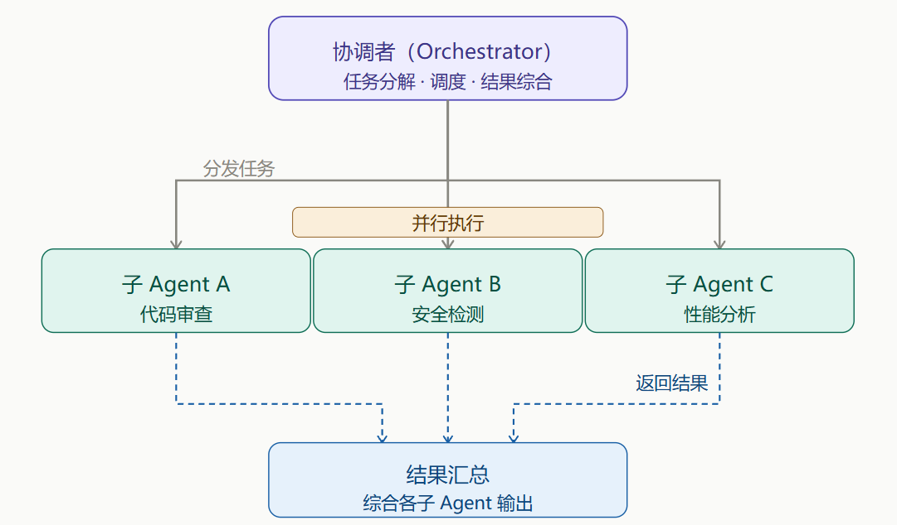
每个子 Agent 拥有独立的上下文窗口。
子 Agent（Subagent）是短暂的、隔离的——完成一个任务后即销毁。Agent 团队（Agent Teams）则是多个独立 Agent 实例长时间协作、互相发消息，更像一个真实的团队。
- 天然支持并行，速度快
- 子 Agent 各自独立，上下文互不干扰
- 可以专门化每个子 Agent 的角色
- 协调逻辑复杂，调试困难
- 多个 Agent 并行的 Token 成本更高
- Orchestrator 本身可能成为瓶颈
- 多 Agent 协作的主要成本是编排开销。如果子任务非常简单（每个只需 1-2 步），编排开销可能超过实际工作的开销，单 Agent 更合适。
# 多 Agent 协作的简化实现
class Orchestrator:
"""编排器：负责任务拆解、分发和结果汇总"""
def __init__(self):
self.subagents = {
"code_review": Subagent(
name="代码审查",
tools=["read_file", "static_analysis"],
system_prompt="你是代码审查专家..."
),
"security": Subagent(
name="安全检测",
tools=["scan_vulnerability", "check_deps"],
system_prompt="你是安全检测专家..."
),
"performance": Subagent(
name="性能分析",
tools=["profile_code", "analyze_complexity"],
system_prompt="你是性能分析专家..."
)
}
def handle_task(self, task: str) -> dict:
# 第一步：分析任务，决定需要哪些 Subagent
needed = self.plan(task)
# 第二步：并行分发（各 Subagent 同时工作，独立上下文）
results = {}
for agent_name in needed:
sub_task = self.decompose(task, agent_name)
results[agent_name] = self.subagents[agent_name].run(sub_task)
# 第三步：汇总各 Subagent 的结果，综合输出
return self.synthesize(task, results)
# 使用示例：一次运行，三个维度并行分析
orch = Orchestrator()
report = orch.handle_task("审查PR #42")
7.4 反思与修正（Reflection）
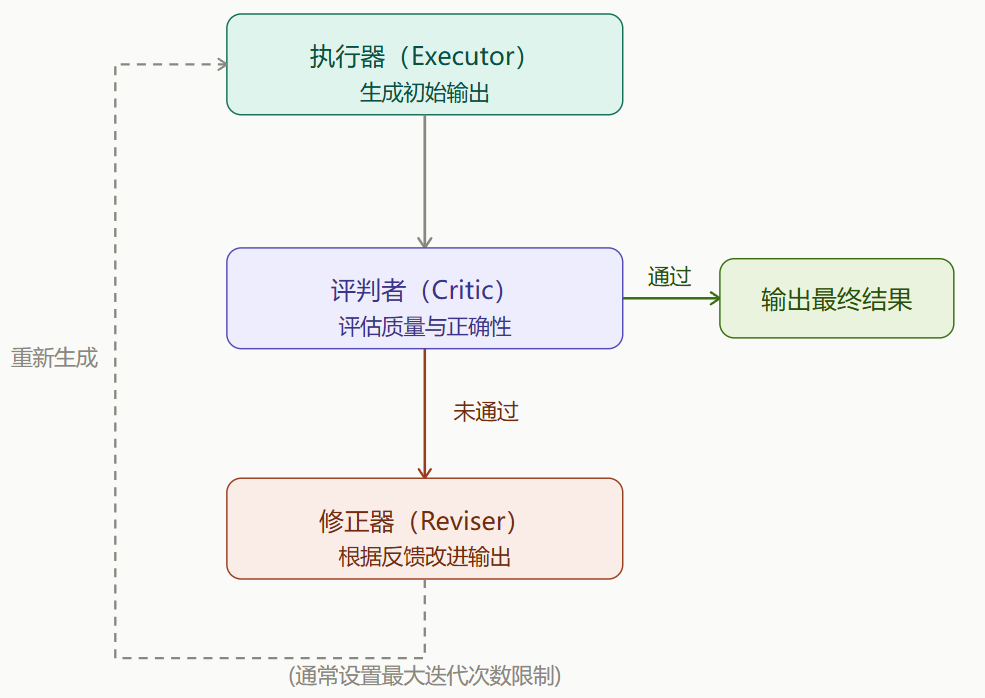
| 方式 | 机制 | 优点 | 缺点 |
|---|---|---|---|
| 自我反思 | 同一个模型先执行再评估自己的输出 | 实现简单，无额外模型成本 | 模型可能对自己的错误"视而不见" |
| Critic 模型 | 用独立的评判模型评估执行模型的输出 | 更客观，能发现执行模型盲区 | 增加模型调用成本和延迟 |
- 显著提升输出质量
- 可以设置明确的质量标准
- 适合有客观评判标准的任务
- 多次迭代增加延迟和成本
- 需要设置最大迭代次数防止死循环
- 评判标准难以形式化时效果有限
# 反思架构的简化实现
class ReflectiveAgent:
"""带有自我反思能力的 Agent"""
def __init__(self, model, tools, max_reflections=3):
self.model = model
self.tools = tools
self.max_reflections = max_reflections # 最多修正次数，防止死循环
def run(self, task: str) -> str:
# 第一步：正常执行，产生初始输出
output = self.model.generate(task)
for i in range(self.max_reflections):
# 第二步：反思 —— 评估输出质量
critique = self.model.generate(f"""
请严格评估以下输出：
原始任务：{task}
当前输出：{output}
检查：事实错误？逻辑漏洞？遗漏信息？格式问题？
如果输出完美无缺，请回复 "PASS"。
""")
if "PASS" in critique:
break # 输出通过审查
# 第三步：修正 —— 根据批评意见改进
output = self.model.generate(f"""
原始任务：{task}
上次输出：{output}
问题反馈：{critique}
请根据反馈修正输出。
""")
return output
# 使用示例
agent = ReflectiveAgent(model=llm, tools={})
code = agent.run("编写一个 Python 函数，实现字符串的 AES 加密")
# Agent 生成代码后自我检查加密实现、密钥处理，
# 发现漏洞后自动修正，确保输出安全可靠
7.5 RAG + Agent（检索增强型智能体）
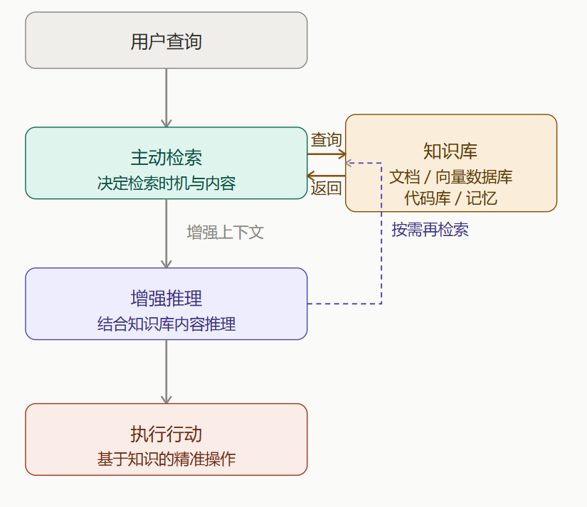
与一般RAG不同：
一般 RAG 是用户提问时固定检索一次，将结果塞入 Prompt。
RAG + Agent 中 Agent 自主判断在推理的哪个环节需要补充知识、需要检索什么，并可以多次查询知识库，直到获得足够的信息来完成任务。
- 突破上下文窗口限制
- 输出有据可查，减少幻觉
- 知识库可独立更新
- 检索质量影响整体效果
- 向量数据库的维护成本
- 检索延迟增加响应时间
# RAG + Agent 的简化实现
class RAGAgent:
"""带有动态检索能力的 Agent"""
def __init__(self, model, vector_db, max_retrievals=5):
self.model = model
self.vector_db = vector_db # 向量数据库
self.max_retrievals = max_retrievals
def should_retrieve(self, context: str, question: str) -> bool:
"""Agent 自己判断是否需要检索更多信息"""
decision = self.model.generate(f"""
当前已知信息：{context}
当前问题：{question}
现有信息是否足以回答问题？回答 YES 或 NO。
""")
return "NO" in decision
def run(self, task: str) -> str:
context = ""
retrieval_count = 0
while retrieval_count < self.max_retrievals:
# Agent 自主判断是否需要检索
if not self.should_retrieve(context, task):
break
# Agent 自主决定检索什么
search_query = self.model.generate(f"""
任务：{task}
已有信息：{context}
为了完成任务，下一步应该检索什么信息？
""")
# 执行检索，结果追加到上下文
docs = self.vector_db.search(search_query)
context += "\n".join(docs)
retrieval_count += 1
# 综合所有信息生成最终答案
return self.model.generate(f"任务：{task}\n参考资料：{context}")
# 使用示例
agent = RAGAgent(model=llm, vector_db=runoob_docs_db)
answer = agent.run("项目框架中如何配置数据库连接池？")
# Agent 先检索"连接池配置"，发现提到"最大连接数"
# 如果不理解，会再次检索"最大连接数最佳实践"
# 最终综合多轮检索结果给出完整回答
7.6 工作流编排（Workflow / DAG 有向无环图）
把 Agent 行为固化为一张有向无环图（DAG），每个节点是一个 LLM 调用或工具调用，边表示数据依赖关系，由框架驱动执行。
这是最接近传统软件工程的一种 Agent 架构。与前面几种架构的最大区别在于：Agent 的自主决策空间被限制在单个节点内部，节点之间的流转是预先定义好的，不可更改。
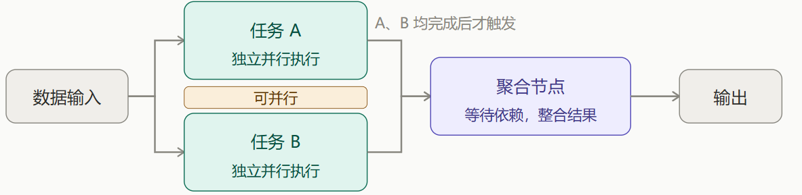
- 可预测、可审计、可重试
- 支持并行加速
- 工程化程度高，运维友好
- 流程需要预先设计，灵活性低
- 难以应对未预期的情况
- 需要学习编排框架
# DAG 工作流的简化定义（类似 LangGraph 风格）
from langgraph import StateGraph
# 定义工作流状态 —— 节点间传递的数据对象
class PipelineState:
raw_data: str = "" # 原始输入数据
cleaned_data: str = "" # 清洗后的数据
analysis_result: dict = {} # 分析结果
final_report: str = "" # 最终报告
# 定义 DAG 节点 —— 每个节点是独立的处理单元
def extract_data(state: PipelineState) -> PipelineState:
"""节点1：从 runoob 数据库中提取原始数据"""
state.raw_data = query_database("SELECT * FROM logs")
return state
def clean_data(state: PipelineState) -> PipelineState:
"""节点2：清洗数据（去重、标准化格式）"""
state.cleaned_data = preprocess(state.raw_data)
return state
def analyze_data(state: PipelineState) -> PipelineState:
"""节点3：统计分析"""
state.analysis_result = statistical_analysis(state.cleaned_data)
return state
def generate_report(state: PipelineState) -> PipelineState:
"""节点4：使用 LLM 生成报告"""
state.final_report = llm.generate(
f"基于以下分析结果生成报告：{state.analysis_result}"
)
return state
# 构建 DAG：定义节点和边（数据流向）
workflow = StateGraph(PipelineState)
workflow.add_node("extract", extract_data)
workflow.add_node("clean", clean_data)
workflow.add_node("analyze", analyze_data)
workflow.add_node("report", generate_report)
# 定义边：extract → clean → analyze → report
workflow.add_edge("extract", "clean")
workflow.add_edge("clean", "analyze")
workflow.add_edge("analyze", "report")
workflow.set_entry_point("extract")
workflow.set_finish_point("report")
# 编译并运行
app = workflow.compile()
result = app.invoke(PipelineState())
print(result.final_report)
8 skills
参考Claude 中的skill讲解
9 Function Calling
工具调用是让 LLM 能够使用外部工具的核心机制
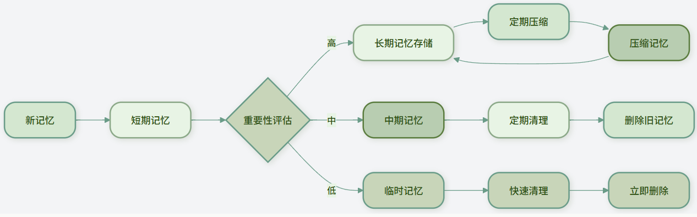
9.1 工具定义
工具定义示例结构
weather_tool = {
"name": "get_weather", # 工具名称
"description": "获取指定城市的天气信息", # 工具描述
"parameters": { # 参数定义
"type": "object",
"properties": {
"city": {
"type": "string",
"description": "城市名称，如'北京'、'上海'"
},
"date": {
"type": "string",
"description": "日期，格式'YYYY-MM-DD'，或'今天'、'明天'",
"enum": ["今天", "明天", "后天"]
}
},
"required": ["city"] # 必填参数
}
}
编写优质的工具描述
# 对于有限的选项，使用枚举（enum）帮助 LLM 理解：
"unit": {
"type": "string",
"description": "温度单位",
"enum": ["celsius", "fahrenheit"],
"default": "celsius"
}
# 提供示例值:在描述中提供示例，帮助 LLM 理解格式：
"date": {
"type": "string",
"description": "日期，格式应为'YYYY-MM-DD'，例如'2024-06-15'"
}
示例:
calculator_tool = {
"name": "calculate",
"description": "执行数学计算，支持加减乘除、幂运算等基本运算",
"parameters": {
"type": "object",
"properties": {
"expression": {
"type": "string",
"description": "数学表达式，如'2 + 3 * 4'、'sqrt(16)'、'sin(30)'"
}
},
"required": ["expression"]
}
}
9.2 参数提取与验证
当 LLM 决定调用工具时，它会分析用户输入，提取出工具所需的参数
用户输入: "查询北京明天的天气温度"
工具: get_weather
提取参数: {"city": "北京", "date": "明天"}
class ParameterValidator:
"""参数验证器"""
def __init__(self, tool_def):
self.tool_def = tool_def
def validate(self, params):
"""执行完整的参数验证"""
all_errors = []
# 检查必填参数
required_errors = self.validate_required(params)
all_errors.extend(required_errors)
# 检查参数类型
type_errors = self.validate_type(params)
all_errors.extend(type_errors)
# 检查参数范围
range_errors = self.validate_range(params)
all_errors.extend(range_errors)
# 检查额外参数（未定义的参数）
extra_errors = self.validate_extra(params)
all_errors.extend(extra_errors)
return len(all_errors) == 0, all_errors
def validate_required(self, params):
"""验证必填参数"""
errors = []
required_params = self.tool_def["parameters"].get("required", [])
for param_name in required_params:
if param_name not in params or params[param_name] is None:
errors.append(f"缺少必填参数: {param_name}")
return errors
def validate_type(self, params):
"""验证参数类型"""
errors = []
for param_name, param_value in params.items():
if param_name in self.tool_def["parameters"]["properties"]:
param_def = self.tool_def["parameters"]["properties"][param_name]
expected_type = param_def.get("type")
if expected_type == "string" and not isinstance(param_value, str):
errors.append(f"参数'{param_name}'应为字符串类型，实际为{type(param_value).__name__}")
elif expected_type == "integer" and not isinstance(param_value, int):
errors.append(f"参数'{param_name}'应为整数类型，实际为{type(param_value).__name__}")
elif expected_type == "number" and not isinstance(param_value, (int, float)):
errors.append(f"参数'{param_name}'应为数字类型，实际为{type(param_value).__name__}")
elif expected_type == "boolean" and not isinstance(param_value, bool):
errors.append(f"参数'{param_name}'应为布尔类型，实际为{type(param_value).__name__}")
return errors
def validate_range(self, params):
"""验证参数范围"""
errors = []
for param_name, param_value in params.items():
if param_name in self.tool_def["parameters"]["properties"]:
param_def = self.tool_def["parameters"]["properties"][param_name]
# 检查最小值
if "minimum" in param_def and param_value < param_def["minimum"]:
errors.append(f"参数'{param_name}'不能小于{param_def['minimum']}")
# 检查最大值
if "maximum" in param_def and param_value > param_def["maximum"]:
errors.append(f"参数'{param_name}'不能大于{param_def['maximum']}")
# 检查枚举值
if "enum" in param_def and param_value not in param_def["enum"]:
errors.append(f"参数'{param_name}'必须是{param_def['enum']}中的一个")
return errors
def validate_extra(self, params):
"""检查未定义的额外参数"""
errors = []
defined_params = set(self.tool_def["parameters"]["properties"].keys())
provided_params = set(params.keys())
extra_params = provided_params - defined_params
if extra_params:
errors.append(f"提供了未定义的参数: {', '.join(extra_params)}")
return errors
# 使用示例
validator = ParameterValidator(weather_tool)
params = {"city": "北京", "date": "明天", "extra": "不应该有的参数"}
is_valid, errors = validator.validate(params)
if is_valid:
print("参数验证通过")
else:
print("参数验证失败:")
for error in errors:
print(f" - {error}")
当参数验证失败时，可以采取以下策略：
- 询问用户：直接向用户询问缺失或错误的参数
- 使用默认值：对于可选参数，使用预定义的默认值
- 智能推断：根据上下文推断合理的参数值
- 格式转换：将用户提供的格式转换为工具要求的格式
def fix_parameters(params, errors, tool_def):
"""尝试修正参数错误"""
fixed_params = params.copy()
for error in errors:
if "缺少必填参数" in error:
param_name = error.split(": ")[1]
# 尝试从上下文推断或使用默认值
if param_name == "date":
fixed_params[param_name] = "今天" # 使用当天作为默认值
elif "应为字符串类型" in error:
param_name = error.split("'")[1]
# 尝试转换为字符串
fixed_params[param_name] = str(params[param_name])
return fixed_params
9.3 错误处理与重试机制
- 网络错误：API 调用超时、连接失败
- 参数错误：参数验证失败、格式不正确
- 权限错误：API 密钥无效、权限不足
- 资源错误：服务不可用、达到调用限制
- 逻辑错误：工具内部逻辑错误
class ToolExecutor:
"""工具执行器"""
def __init__(self):
self.tools = {} # 注册的工具
self.validator = ParameterValidator
self.error_handler = ErrorHandler()
self.retry = ExponentialBackoffRetry()
self.breaker = CircuitBreaker()
def register_tool(self, name, tool_def, func):
"""注册工具"""
self.tools[name] = {
"definition": tool_def,
"function": func
}
def execute_tool(self, tool_name, params):
"""执行工具"""
if tool_name not in self.tools:
return {
"success": False,
"error": f"工具'{tool_name}'未注册"
}
tool_info = self.tools[tool_name]
tool_def = tool_info["definition"]
tool_func = tool_info["function"]
# 验证参数
validator = self.validator(tool_def)
is_valid, errors = validator.validate(params)
if not is_valid:
return {
"success": False,
"error": "参数验证失败",
"details": errors
}
# 通过熔断器执行（带重试）
try:
def execute_with_retry():
return self.breaker.execute(
lambda: self.retry.retry(tool_func, **params)
)
result = execute_with_retry()
return {
"success": True,
"result": result,
"tool": tool_name
}
except Exception as e:
# 错误处理
error_response = self.error_handler.handle(e, {
"tool": tool_name,
"params": params
})
return {
"success": False,
"error": error_response["error"],
"retryable": error_response.get("retryable", False),
"suggestion": error_response.get("suggestion", "")
}
def handle_user_request(self, user_input):
"""处理用户请求（简化版）"""
# 1. 让LLM选择工具和提取参数（这里简化处理）
# 实际应用中，这里会调用LLM进行工具选择和参数提取
# 模拟LLM的输出
if "天气" in user_input:
tool_name = "get_weather"
# 简单提取城市（实际应用中LLM会做得更好）
if "北京" in user_input:
params = {"city": "北京", "date": "今天"}
elif "上海" in user_input:
params = {"city": "上海", "date": "今天"}
else:
params = {"city": "北京", "date": "今天"} # 默认值
else:
return "抱歉，我无法处理这个请求"
# 2. 执行工具
result = self.execute_tool(tool_name, params)
# 3. 生成最终回答
if result["success"]:
weather = result["result"]
return f"{params['city']}今天天气：{weather['condition']}，温度{weather['temperature']}°C"
else:
return f"获取天气信息失败：{result['error']}"
# 使用示例
executor = ToolExecutor()
# 注册天气工具
def mock_weather_api(city, date):
"""模拟天气API"""
# 模拟API调用延迟
time.sleep(0.1)
return {"temperature": 22, "condition": "多云"}
executor.register_tool("get_weather", weather_tool, mock_weather_api)
# 处理用户请求
response = executor.handle_user_request("北京今天天气怎么样？")
print(response)
10 记忆系统
一轮：一次问答
会话：包含多轮
上下文窗口 ： 大模型一次性能吃下的最大 Token 容量
只有两种情况才会开全新上下文窗口：
- 用户新建会话
- 程序主动清空上下文、重置会话
10.1 短期记忆（同一会话内、多轮之间）
- 通常只能保存最近的几次对话
- 快速访问：读取和写入速度很快
- 临时性：对话结束后通常会被清除或压缩
- 上下文相关：直接影响当前的响应生成
主要用来保持对话的连贯性，存储当前任务的中间结果，记住用户在当前对话中提到的偏好
class ShortTermMemory:
"""短期记忆实现"""
def __init__(self, max_turns=10):
self.max_turns = max_turns # 最大对话轮数
self.conversation_history = [] # 对话历史
self.temporary_data = {} # 临时数据存储
def add_message(self, role, content):
"""添加消息到对话历史"""
message = {"role": role, "content": content, "timestamp": time.time()}
self.conversation_history.append(message)
# 保持历史不超过最大长度
if len(self.conversation_history) > self.max_turns:
self.conversation_history.pop(0)
def get_context(self):
"""获取对话上下文（用于发送给LLM）"""
return self.conversation_history[-self.max_turns:]
def store_temp(self, key, value):
"""存储临时数据"""
self.temporary_data[key] = value
def get_temp(self, key, default=None):
"""获取临时数据"""
return self.temporary_data.get(key, default)
def clear_temp(self):
"""清除临时数据"""
self.temporary_data.clear()
10.2 长期记忆（可以跨轮次、跨会话、跨天、跨设备）
- 容量大：可以存储大量信息
- 持久化：信息会长期保存，不会自动清除
- 检索式访问：通过查询检索相关信息，而非顺序读取
- 结构化存储：信息通常以结构化方式存储，便于检索
主要存储用户的个人信息和偏好，积累知识和经验，记住重要的对话内容，保存任务执行结果
class LongTermMemory:
"""长期记忆基类"""
def __init__(self):
self.memories = [] # 记忆条目列表
def add_memory(self, content, metadata=None):
"""添加记忆"""
memory = {
"id": str(uuid.uuid4()),
"content": content,
"metadata": metadata or {},
"timestamp": time.time(),
"importance": 0.5 # 默认重要性
}
self.memories.append(memory)
return memory["id"]
def search_memories(self, query, limit=5):
"""搜索记忆（子类需要实现具体搜索逻辑）"""
raise NotImplementedError
def get_memory(self, memory_id):
"""获取特定记忆"""
for memory in self.memories:
if memory["id"] == memory_id:
return memory
return None
def delete_memory(self, memory_id):
"""删除记忆"""
self.memories = [m for m in self.memories if m["id"] != memory_id]
10.3 对话历史
LLM 的上下文长度有限。
多轮对话不是每轮新开窗口，是把历史 + 当前问题一起塞进同一个窗口。
窗口有上限，塞不下就会被截断，需要智能地管理哪些历史信息应该保留、哪些可以丢弃。
不是所有历史对话都同样重要。智能的历史选择可以提高上下文的使用效率.
10.3.1 基本管理
采用「从最新对话往回倒序填充、按 Token 估算限制长度」的滑动窗口策略，只保留最近 N 轮完整原始对话，直到触达最大 Token 上限，更早历史直接丢弃。
class ConversationManager:
"""对话管理器"""
def __init__(self, max_context_length=4000):
self.max_context_length = max_context_length # 最大token数
self.history = [] # 完整的对话历史
self.active_context = [] # 当前活跃的上下文
def add_exchange(self, user_input, assistant_response):
"""添加一轮对话"""
self.history.append({
"user": user_input,
"assistant": assistant_response,
"timestamp": time.time()
})
def build_context(self, current_query, include_history=True):
"""构建当前查询的上下文"""
if not include_history or not self.history:
# 没有历史或不需要历史，只返回当前查询
return [{"role": "user", "content": current_query}]
# 从最近的对话开始，逐步添加历史，直到达到长度限制
context = []
context_length = self.estimate_tokens(current_query)
# 添加当前查询
context.insert(0, {"role": "user", "content": current_query})
# 从最近到最远添加历史
for exchange in reversed(self.history):
user_tokens = self.estimate_tokens(exchange["user"])
assistant_tokens = self.estimate_tokens(exchange["assistant"])
# 检查是否会超出限制
if context_length + user_tokens + assistant_tokens > self.max_context_length:
break
# 添加助理回复（在用户输入之前）
context.insert(0, {"role": "assistant", "content": exchange["assistant"]})
context.insert(0, {"role": "user", "content": exchange["user"]})
context_length += user_tokens + assistant_tokens
return context
def estimate_tokens(self, text):
"""粗略估计文本的token数量（实际应用中应使用准确的tokenizer）"""
# 简单估算：英文约0.75单词/token，中文约1-2字符/token
if self.is_chinese(text):
return len(text) // 2 # 中文每2字符约1个token
else:
words = len(text.split())
return int(words * 1.3) # 英文每单词约1.3个token
def is_chinese(self, text):
"""判断文本是否主要为中文"""
chinese_chars = sum(1 for c in text if '\u4e00' <= c <= '\u9fff')
return chinese_chars / max(len(text), 1) > 0.3
def clear_history(self):
"""清空对话历史"""
self.history.clear()
self.active_context.clear()
10.3.2 基于时间的衰减
def time_based_selection(history, current_time, max_items=10):
"""基于时间的选择：越近的对话权重越高"""
scored_items = []
for item in history:
# 计算时间衰减分数（越近分数越高）
time_diff = current_time - item["timestamp"]
time_score = max(0, 1 - time_diff / 3600) # 1小时内完全保留，之后衰减
# 结合其他因素（如对话长度、重要性标记等）
total_score = time_score
scored_items.append((total_score, item))
# 按分数排序，选择分数最高的
scored_items.sort(key=lambda x: x[0], reverse=True)
return [item for score, item in scored_items[:max_items]]
10.3.3 基于相关性的选择
def relevance_based_selection(history, current_query, embedding_model, max_items=5):
"""基于与当前查询相关性的选择"""
if not history:
return []
# 计算当前查询的向量
query_embedding = embedding_model.encode(current_query)
scored_items = []
for item in history:
# 将历史对话内容转换为向量
content = item["user"] + " " + item["assistant"]
content_embedding = embedding_model.encode(content)
# 计算余弦相似度
similarity = cosine_similarity([query_embedding], [content_embedding])[0][0]
scored_items.append((similarity, item))
# 按相似度排序，选择最相关的
scored_items.sort(key=lambda x: x[0], reverse=True)
return [item for similarity, item in scored_items[:max_items]]
10.3.4 混合选择策略
class SmartHistorySelector:
"""智能历史选择器"""
def __init__(self, embedding_model=None):
self.embedding_model = embedding_model
def select_history(self, history, current_query, max_context_length=3000):
"""智能选择历史对话"""
selected = []
current_length = 0
# 策略1：总是包含最近的一轮对话
if history:
recent = history[-1]
recent_length = self.estimate_length(recent)
if recent_length <= max_context_length:
selected.append(recent)
current_length += recent_length
# 策略2：基于相关性的选择
if self.embedding_model and len(history) > 1:
relevant = self.select_by_relevance(history[:-1], current_query, 3)
for item in relevant:
item_length = self.estimate_length(item)
if current_length + item_length <= max_context_length:
selected.append(item)
current_length += item_length
# 策略3：如果还有空间，按时间顺序添加
remaining_space = max_context_length - current_length
if remaining_space > 100: # 至少100token的空间
for item in history:
if item not in selected:
item_length = self.estimate_length(item)
if item_length <= remaining_space:
selected.append(item)
remaining_space -= item_length
# 按时间顺序排序
selected.sort(key=lambda x: x["timestamp"])
return selected
def select_by_relevance(self, history, query, max_items):
"""基于相关性选择"""
# 简化实现，实际应使用向量相似度
query_lower = query.lower()
scored = []
for item in history:
content = (item["user"] + " " + item["assistant"]).lower()
# 简单关键词匹配
score = sum(1 for word in query_lower.split() if word in content)
scored.append((score, item))
scored.sort(key=lambda x: x[0], reverse=True)
return [item for score, item in scored[:max_items]]
def estimate_length(self, exchange):
"""估计对话长度"""
return len(exchange["user"]) + len(exchange["assistant"])
10.4 对话历史压缩
当对话历史太长时，可以对其进行压缩，保留核心信息
class HistoryCompressor:
"""对话历史压缩器"""
def __init__(self, llm_client):
self.llm = llm_client
def compress_conversation(self, conversation_history, max_summary_length=500):
"""压缩对话历史"""
if len(conversation_history) <= 2:
return conversation_history # 太短不需要压缩
# 将对话历史转换为文本
conversation_text = self.history_to_text(conversation_history)
# 使用LLM生成摘要
prompt = f"""
请将以下对话历史压缩为一个简短的摘要，保留核心信息和重要细节：
对话历史：
{conversation_text}
摘要要求：
1. 不超过{max_summary_length}字
2. 保留用户的主要需求和助理的关键回答
3. 忽略问候语、重复内容和无关细节
摘要：
"""
summary = self.llm.generate(prompt, max_tokens=max_summary_length)
# 创建压缩后的历史（摘要 + 最近几轮对话）
compressed_history = [
{
"role": "system",
"content": f"之前的对话摘要：{summary}"
}
]
# 保留最近的1-2轮对话以保持连贯性
for exchange in conversation_history[-2:]:
compressed_history.append({
"role": "user" if exchange["role"] == "user" else "assistant",
"content": exchange["content"]
})
return compressed_history
def history_to_text(self, history):
"""将对话历史转换为文本"""
lines = []
for exchange in history:
role = "用户" if exchange["role"] == "user" else "助理"
lines.append(f"{role}: {exchange['content']}")
return "\n".join(lines)
10.5 向量数据库
向量数据库是长期记忆系统的核心技术，它允许 Agent 基于语义相似度检索相关信息，而不仅仅是关键词匹配。
import chromadb
from sentence_transformers import SentenceTransformer
import uuid
import time
class VectorMemory:
"""基于向量数据库的记忆系统"""
def __init__(self, persist_directory="./memory_db"):
# 初始化 embedding 模型
self.embedding_model = SentenceTransformer('paraphrase-multilingual-MiniLM-L12-v2')
# 初始化 ChromaDB
self.client = chromadb.PersistentClient(path=persist_directory)
self.collection = self.client.get_or_create_collection(
name="agent_memories",
metadata={"description": "AI Agent 的长期记忆"}
)
def add_memory(self, content, metadata=None, importance=0.5):
"""添加记忆到向量数据库"""
# 生成 embedding
embedding = self.embedding_model.encode(content).tolist()
# 准备元数据
full_metadata = {
"timestamp": time.time(),
"importance": importance,
"content_length": len(content)
}
if metadata:
full_metadata.update(metadata)
# 生成唯一ID
memory_id = str(uuid.uuid4())
# 添加到数据库
self.collection.add(
documents=[content],
embeddings=[embedding],
metadatas=[full_metadata],
ids=[memory_id]
)
return memory_id
def search_memories(self, query, n_results=5, min_similarity=0.3):
"""搜索相关记忆"""
# 生成查询的 embedding
query_embedding = self.embedding_model.encode(query).tolist()
# 在向量数据库中搜索
results = self.collection.query(
query_embeddings=[query_embedding],
n_results=n_results,
include=["documents", "metadatas", "distances"]
)
# 处理结果
memories = []
if results["documents"]:
for i in range(len(results["documents"][0])):
similarity = 1 - results["distances"][0][i] # 转换距离为相似度
if similarity >= min_similarity:
memory = {
"content": results["documents"][0][i],
"metadata": results["metadatas"][0][i],
"similarity": similarity,
"id": results["ids"][0][i]
}
memories.append(memory)
# 按相似度排序
memories.sort(key=lambda x: x["similarity"], reverse=True)
return memories
def get_relevant_context(self, query, max_memories=3):
"""获取与查询相关的记忆作为上下文"""
memories = self.search_memories(query, n_results=max_memories)
if not memories:
return ""
# 构建上下文字符串
context_parts = []
for i, memory in enumerate(memories):
content = memory["content"]
similarity = memory["similarity"]
timestamp = memory["metadata"]["timestamp"]
# 格式化时间
time_str = time.strftime("%Y-%m-%d %H:%M", time.localtime(timestamp))
context_parts.append(
f"[相关记忆 {i+1}，相似度：{similarity:.2f}，时间：{time_str}]\n{content}"
)
return "\n\n".join(context_parts)
def delete_memory(self, memory_id):
"""删除记忆"""
self.collection.delete(ids=[memory_id])
def get_all_memories(self, limit=100):
"""获取所有记忆（按时间倒序）"""
# 注意：ChromaDB 没有直接的获取所有功能
# 这里通过搜索一个通用查询来获取
results = self.collection.query(
query_embeddings=[self.embedding_model.encode(" ").tolist()], # 空查询
n_results=limit
)
memories = []
if results["documents"]:
for i in range(len(results["documents"][0])):
memory = {
"content": results["documents"][0][i],
"metadata": results["metadatas"][0][i],
"id": results["ids"][0][i]
}
memories.append(memory)
# 按时间倒序排序
memories.sort(key=lambda x: x["metadata"]["timestamp"], reverse=True)
return memories
元数据过滤：利用向量数据库的元数据过滤功能提高检索精度
# 使用元数据过滤
results = collection.query(
query_embeddings=[query_embedding],
n_results=5,
where={"type": "personal_preference"}, # 只检索个人偏好类型的记忆
where_document={"$contains": "编程"} # 只检索包含"编程"的文档
)
混合搜索：结合向量搜索和关键词搜索
def hybrid_search(query, vector_memory, keyword_weight=0.3):
"""混合搜索：结合向量相似度和关键词匹配"""
# 向量搜索
vector_results = vector_memory.search_memories(query, n_results=10)
# 关键词搜索（简化实现）
keyword_results = []
query_words = set(query.lower().split())
# 这里简化实现，实际应从数据库检索
all_memories = vector_memory.get_all_memories(limit=100)
for memory in all_memories:
content_words = set(memory["content"].lower().split())
common_words = query_words & content_words
keyword_score = len(common_words) / max(len(query_words), 1)
if keyword_score > 0:
memory["keyword_score"] = keyword_score
keyword_results.append(memory)
# 合并结果
all_results = {}
for result in vector_results:
result_id = result["id"]
all_results[result_id] = {
"vector_score": result["similarity"],
"keyword_score": 0,
"content": result["content"],
"metadata": result["metadata"]
}
for result in keyword_results:
result_id = result["id"]
if result_id in all_results:
all_results[result_id]["keyword_score"] = result["keyword_score"]
else:
all_results[result_id] = {
"vector_score": 0,
"keyword_score": result["keyword_score"],
"content": result["content"],
"metadata": result["metadata"]
}
# 计算综合分数
final_results = []
for result_id, result in all_results.items():
combined_score = (
(1 - keyword_weight) * result["vector_score"] +
keyword_weight * result["keyword_score"]
)
result["combined_score"] = combined_score
final_results.append(result)
# 按综合分数排序
final_results.sort(key=lambda x: x["combined_score"], reverse=True)
return final_results[:5]
10.6 记忆压缩与总结策略
随着对话的进行，记忆会不断累积。为了避免信息过载和减少资源消耗，需要定期对记忆进行压缩和总结。
10.6.1 基于重要性的压缩
class ImportanceBasedCompressor:
"""基于重要性的记忆压缩器"""
def __init__(self, llm_client):
self.llm = llm_client
def compress_memories(self, memories, target_ratio=0.5):
"""压缩记忆，保留重要内容"""
if len(memories) <= 1:
return memories # 记忆太少，不需要压缩
# 评估每个记忆的重要性
scored_memories = []
for memory in memories:
importance = self.evaluate_importance(memory)
scored_memories.append((importance, memory))
# 按重要性排序
scored_memories.sort(key=lambda x: x[0], reverse=True)
# 保留最重要的部分
keep_count = max(1, int(len(memories) * target_ratio))
compressed_memories = [memory for _, memory in scored_memories[:keep_count]]
return compressed_memories
def evaluate_importance(self, memory):
"""评估记忆的重要性"""
content = memory["content"]
metadata = memory.get("metadata", {})
# 基于规则的重要性评估
importance_score = 0.0
# 1. 基于类型
memory_type = metadata.get("type", "")
if memory_type == "personal_info":
importance_score += 0.8
elif memory_type == "preference":
importance_score += 0.7
elif memory_type == "fact":
importance_score += 0.5
elif memory_type == "conversation":
importance_score += 0.3
# 2. 基于长度（适中的长度可能更重要）
content_length = len(content)
if 50 <= content_length <= 500:
importance_score += 0.2
elif content_length > 500:
importance_score += 0.1
# 3. 基于时间衰减（越新的记忆越重要）
timestamp = metadata.get("timestamp", 0)
if timestamp > 0:
age_days = (time.time() - timestamp) / (24 * 3600)
recency_score = max(0, 1 - age_days / 30) # 30天内线性衰减
importance_score += recency_score * 0.5
# 4. 基于显式重要性标记
explicit_importance = metadata.get("importance", 0.5)
importance_score += explicit_importance * 0.5
return min(importance_score, 1.0) # 归一化到0-1
10.6.2 基于聚类的压缩
将相似记忆聚类，然后总结每个聚类
from sklearn.cluster import KMeans
import numpy as np
class ClusterBasedCompressor:
"""基于聚类的记忆压缩器"""
def __init__(self, embedding_model):
self.embedding_model = embedding_model
def compress_by_clustering(self, memories, n_clusters=None):
"""通过聚类压缩记忆"""
if len(memories) <= 3:
return memories # 记忆太少，不需要聚类
# 确定聚类数量
if n_clusters is None:
n_clusters = min(3, len(memories) // 2)
# 获取所有记忆的embedding
embeddings = []
for memory in memories:
embedding = self.embedding_model.encode(memory["content"])
embeddings.append(embedding)
embeddings = np.array(embeddings)
# 执行K-means聚类
kmeans = KMeans(n_clusters=n_clusters, random_state=42, n_init=10)
labels = kmeans.fit_predict(embeddings)
# 对每个聚类进行总结
compressed_memories = []
for cluster_id in range(n_clusters):
# 获取该聚类的所有记忆
cluster_memories = [
memories[i] for i in range(len(memories)) if labels[i] == cluster_id
]
if cluster_memories:
# 总结该聚类的记忆
summary = self.summarize_cluster(cluster_memories)
compressed_memories.append(summary)
return compressed_memories
def summarize_cluster(self, cluster_memories):
"""总结一个聚类的记忆"""
if len(cluster_memories) == 1:
# 只有一个记忆，直接返回
return cluster_memories[0]
# 合并所有记忆内容
all_content = "\n".join([m["content"] for m in cluster_memories])
# 使用LLM生成总结（这里简化实现）
# 实际应调用LLM生成高质量的总结
summary_content = f"相关主题的{len(cluster_memories)}条记忆摘要：{all_content[:500]}..."
# 合并元数据
merged_metadata = {
"type": "cluster_summary",
"original_count": len(cluster_memories),
"compressed": True,
"timestamp": time.time()
}
return {
"content": summary_content,
"metadata": merged_metadata
}
10.6.3 增量总结策略
在对话过程中逐步总结，而不是一次性处理所有历史
class IncrementalSummarizer:
"""增量总结器"""
def __init__(self, llm_client, summary_interval=5):
self.llm = llm_client
self.summary_interval = summary_interval # 每多少轮对话总结一次
self.conversation_buffer = []
self.summaries = []
def add_conversation(self, user_input, assistant_response):
"""添加对话到缓冲区"""
self.conversation_buffer.append({
"user": user_input,
"assistant": assistant_response,
"timestamp": time.time()
})
# 检查是否需要总结
if len(self.conversation_buffer) >= self.summary_interval:
self.create_summary()
def create_summary(self):
"""创建总结"""
if not self.conversation_buffer:
return
# 将对话缓冲区的所有内容总结为一段文字
conversation_text = ""
for exchange in self.conversation_buffer:
conversation_text += f"用户: {exchange['user']}\n"
conversation_text += f"助理: {exchange['assistant']}\n\n"
# 使用LLM生成总结
prompt = f"""
请将以下对话内容总结为一个简短的段落，保留核心信息和重要细节：
对话内容：
{conversation_text}
总结要求：
1. 不超过200字
2. 保留用户的主要需求和助理的关键回答
3. 忽略问候语、重复内容和无关细节
总结：
"""
summary = self.llm.generate(prompt, max_tokens=200)
# 保存总结
self.summaries.append({
"content": summary,
"timestamp": time.time(),
"original_count": len(self.conversation_buffer)
})
# 清空缓冲区
self.conversation_buffer.clear()
def get_context(self, include_recent=True, include_summaries=True):
"""获取上下文"""
context_parts = []
if include_summaries and self.summaries:
# 添加所有总结
for i, summary in enumerate(self.summaries[-3:]): # 最多3个总结
context_parts.append(f"[对话总结 {i+1}]\n{summary['content']}")
if include_recent and self.conversation_buffer:
# 添加最近的对话
for exchange in self.conversation_buffer[-3:]: # 最多3轮最近对话
context_parts.append(f"用户: {exchange['user']}")
context_parts.append(f"助理: {exchange['assistant']}")
return "\n\n".join(context_parts)
10.7 记忆生命周期管理
class MemoryLifecycleManager:
"""记忆生命周期管理器"""
def __init__(self):
self.short_term = ShortTermMemory()
self.long_term = VectorMemory()
self.compressor = ImportanceBasedCompressor()
def process_memory(self, content, initial_importance=0.5):
"""处理新记忆"""
# 1. 先存入短期记忆
self.short_term.store_temp("recent_memory", content)
# 2. 评估重要性
evaluated_importance = self.evaluate_importance(content, initial_importance)
# 3. 根据重要性决定存储策略
if evaluated_importance >= 0.8:
# 高重要性：立即存入长期记忆
self.long_term.add_memory(content, {"importance": evaluated_importance})
elif evaluated_importance >= 0.5:
# 中等重要性：标记为待处理
self.queue_for_review(content, evaluated_importance)
else:
# 低重要性：仅保留在短期记忆，稍后清理
pass
def evaluate_importance(self, content, initial_importance):
"""评估记忆重要性"""
# 这里可以实现更复杂的评估逻辑
return initial_importance
def queue_for_review(self, content, importance):
"""将记忆加入待处理队列"""
# 实现队列逻辑
pass
def periodic_maintenance(self):
"""定期维护"""
# 1. 压缩长期记忆
all_memories = self.long_term.get_all_memories(limit=1000)
if len(all_memories) > 100:
compressed = self.compressor.compress_memories(all_memories, target_ratio=0.7)
# 更新长期记忆（实际实现中可能需要更复杂的逻辑）
# 这里简化处理
# 2. 清理旧的低重要性记忆
self.cleanup_old_memories()
def cleanup_old_memories(self, max_age_days=30, min_importance=0.3):
"""清理旧记忆"""
# 获取所有记忆
all_memories = self.long_term.get_all_memories(limit=1000)
current_time = time.time()
for memory in all_memories:
metadata = memory.get("metadata", {})
timestamp = metadata.get("timestamp", 0)
importance = metadata.get("importance", 0.5)
# 计算记忆年龄
age_days = (current_time - timestamp) / (24 * 3600)
# 删除旧且不重要的记忆
if age_days > max_age_days and importance < min_importance:
self.long_term.delete_memory(memory["id"])
11 智能体通信协议
如何让智能体与外部世界高效交互？如何让多个智能体相互协作？
这正是智能体通信协议要解决的核心问题。
三种通信协议：
- MCP（Model Context Protocol）用于智能体与工具的标准化通信
- A2A（Agent-to-Agent Protocol）用于智能体间的点对点协作
- ANP（Agent Network Protocol）用于构建大规模智能体网络。这三种协议共同构成了智能体通信的基础设施层。
Function Calling是模型内置的能力：模型输出固定格式 JSON，应用层执行函数并返回结果。它的短板在规模化 / 企业级场景下非常明显：
- 碎片化严重、无统一标准
- OpenAI、Anthropic、Google、开源模型（Llama/Qwen）Schema 格式各不兼容
- M 个模型 × N 个工具 = M×N 次重复适配，换模型就要重写代码
- 工具无法「即插即用」，每个接入都要定制开发
- 工具发现与管理能力弱
- 每次会话必须全量声明所有工具，工具一多（>20 个）上下文爆炸、选择准确率暴跌
- 不支持动态发现新工具、服务端推送能力更新
- 工具无组织、无分类，难以做权限与版本管理
- 上下文传递僵化，不适合复杂 Agent
- 只能传「参数→返回值」，无持久化上下文（如文件句柄、数据库连接、会话状态）
- 多步骤链式调用要靠应用层硬编码编排，模型无全局流程感知
- 大上下文 / 长会话场景下，Token 成本高、易超限
- 安全与治理缺失
- 工具执行在应用本地，权限边界模糊，难做细粒度访问控制
- 缺乏统一的认证、授权、审计机制，企业级合规难落地
- 跨模型 / 跨平台互操作性差
- 强绑定单一模型生态，无法在不同 LLM 间无缝迁移工具
- 难以构建「多模型 + 多工具」的分布式智能体网络
MCP等智能体通信协议，核心动因之一就是解决原生 Function Calling 在「标准化、可扩展、复杂上下文、安全治理」上的不足，但二者不是替代关系，而是互补关系。
选择合适的协议
- 如果你的智能体需要访问外部服务（文件、数据库、API），选择MCP
- 如果你需要多个智能体相互协作完成任务，选择A2A
- 如果你要构建大规模的智能体生态系统，考虑ANP
11.1 MCP
MCP：智能体与工具的桥梁
由 Anthropic 团队提出，其核心设计理念是标准化智能体与外部工具/资源的通信方式
-
Host（宿主层）：Claude Desktop 作为 Host，负责接收用户提问并与模型交互。Host 是用户直接交互的界面，它管理整个对话流程。
-
Client（客户端层）：当模型决定需要访问文件系统时，Host 中内置的 MCP Client 被激活。Client 负责与适当的 MCP Server 建立连接，发送请求并接收响应。
-
Server（服务器层）：文件系统 MCP Server 被调用，执行实际的文件扫描操作，并返回找到的文档列表。
完整的交互流程：用户问题 → Claude Desktop(Host) → Claude 模型分析 → 需要文件信息 → MCP Client 连接 → 文件系统 MCP Server → 执行操作 → 返回结果 → Claude 生成回答 → 显示在 Claude Desktop 上
这种架构设计的优势在于关注点分离：Host 专注于用户体验，Client 专注于协议通信，Server 专注于具体功能实现。开发者只需专注于开发对应的 MCP Server，无需关心 Host 和 Client 的实现细节。
工具选择与调用流程如图：
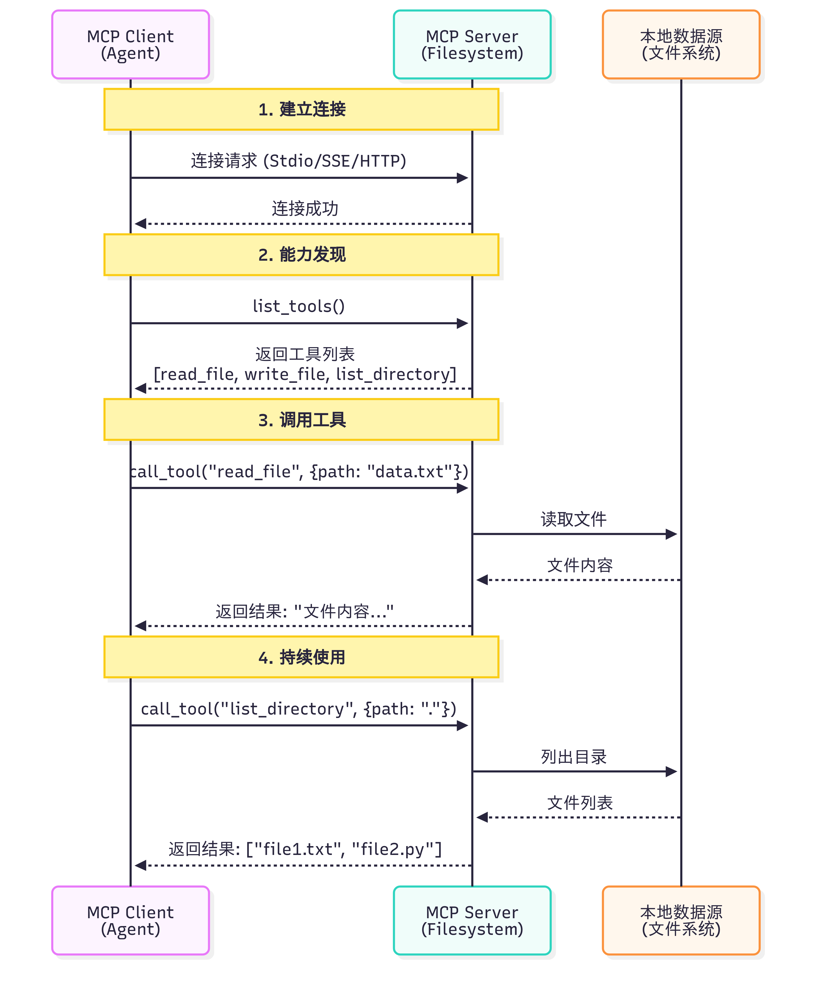
| 维度 | Function Calling | MCP |
|---|---|---|
| 本质 | LLM的一种能力 | 标准化的通信协议 |
| 作用层级 | 模型层 | 基础设施层 |
| 解决问题 | 让LLM知道“如何调用函数” | 让工具和模型“如何连接” |
| 标准化 | 每个模型提供商实现不同 | 统一的协议规范 |
| 工具复用 | 需要为每个应用重写 | 社区工具可直接使用 |
Function Calling 与 MCP 并非竞争关系，而是相辅相成的。Function Calling 是大语言模型的一项核心能力，它体现了模型内在的智能，使模型能够理解何时需要调用函数，并精准生成相应的调用参数。相对地，MCP 则扮演着基础设施协议的角色，它在工程层面解决了工具与模型如何连接的问题，通过标准化的方式来描述和调用工具。
11.2 A2A
A2A：智能体间的对话
A2A（Agent-to-Agent Protocol）协议由 Google 团队提出2，其核心设计理念是实现智能体之间的点对点通信。与 MCP 关注智能体与工具的通信不同，A2A 关注的是智能体之间如何相互协作。
A2A 的设计哲学是"对等通信"。如图 10.2 所示，在 A2A 网络中，每个智能体既是服务提供者，也是服务消费者。智能体可以主动发起请求，也可以响应其他智能体的请求。这种对等的设计避免了中心化协调器的瓶颈，让智能体网络更加灵活和可扩展。
11.3 ANP
ANP：智能体网络的基础设施
ANP（Agent Network Protocol）是一个概念性的协议框架3，目前由开源社区维护，还没有成熟的生态，其核心设计理念是构建大规模智能体网络的基础设施。如果说 MCP 解决的是"如何访问工具"，A2A 解决的是"如何与其他智能体对话"，那么 ANP 解决的是"如何在大规模网络中发现和连接智能体"。
ANP 的设计哲学是"去中心化服务发现"。在一个包含成百上千个智能体的网络中，如何让智能体能够找到它需要的服务？ANP 提供了服务注册、发现和路由机制，让智能体能够动态地发现网络中的其他服务，而不需要预先配置所有的连接关系。
12 AI Agent 简单实现
from typing import Any, Dict, List, Callable
import time
# -----------------------------
# Memory（非常轻量）
# -----------------------------
class Memory:
def __init__(self):
self.short = {} # 当前会话上下文
self.long = {} # 长期偏好/联系人等
def get_short(self, k, default=None):
return self.short.get(k, default)
def set_short(self, k, v):
self.short[k] = v
def get_long(self, k, default=None):
return self.long.get(k, default)
def set_long(self, k, v):
self.long[k] = v
# -----------------------------
# LLM 抽象（替换点）
# -----------------------------
class LLMInterface:
def generate(self, prompt: str) -> str:
"""
这里给出一个非常简单的规则式模拟回答器。
真实使用时：替换为 OpenAI/其它模型的调用代码，返回 model 文本。
"""
# 极简解析示例：识别是否需要判断"下雨"
if "是否下雨" in prompt or "下雨" in prompt:
return "请先查询天气；如果有雨，请生成提醒并发送给目标联系人。"
if "生成提醒" in prompt:
return "请提醒小王：明天北京有雨，请带伞。"
return "我理解了。"
# -----------------------------
# 工具注册与模拟工具
# -----------------------------
class ToolRegistry:
def __init__(self):
self.tools: Dict[str, Callable[..., Any]] = {}
def register(self, name: str, fn: Callable[..., Any]):
self.tools[name] = fn
def call(self, name: str, *args, **kwargs):
if name not in self.tools:
raise ValueError(f"工具未注册: {name}")
return self.tools[name](*args, **kwargs)
# 模拟工具：天气查询（真实情况会调用天气 API）
def mock_weather_api(city: str, date: str) -> Dict[str, Any]:
# 简单规则：如果 city 包含 "北京" 且 date 包含 "明天"，返回下雨示例
if "北京" in city and "明天" in date:
return {"city": city, "date": date, "cond": "雨", "precip_mm": 5}
return {"city": city, "date": date, "cond": "晴", "precip_mm": 0}
# 模拟工具：发送消息（真实情况会调用短信/邮件/企业微信等）
def mock_send_message(contact: str, message: str) -> bool:
print(f"[发送消息] to={contact} message={message}")
return True
# 模拟工具：简单搜索（示意）
def mock_search(query: str) -> str:
return f"模拟搜索结果：关于 `{query}` 的信息摘要。"
# -----------------------------
# Planner / Executor
# -----------------------------
class SimplePlanner:
def plan(self, goal: str) -> List[Dict[str, Any]]:
"""
将目标拆解为步骤列表（非常简化的实现）
每一步包含：action(工具名或内部动作)、params
"""
steps = []
# 例：若提示包含"天气"，生成两个步骤：查天气、判断并可能发提醒
if "天气" in goal or "下雨" in goal:
steps.append({"action": "query_weather", "params": {"city": "北京", "date": "明天"}})
steps.append({"action": "decide_and_notify", "params": {"contact_name": "小王"}})
else:
steps.append({"action": "search", "params": {"query": goal}})
return steps
class Executor:
def __init__(self, tools: ToolRegistry, memory: Memory, llm: LLMInterface):
self.tools = tools
self.memory = memory
self.llm = llm
def run_step(self, step: Dict[str, Any]):
action = step["action"]
params = step.get("params", {})
if action == "query_weather":
res = self.tools.call("weather", params["city"], params["date"])
self.memory.set_short("last_weather", res)
return res
if action == "decide_and_notify":
weather = self.memory.get_short("last_weather", {})
# 简单规则决策
if weather.get("cond") == "雨":
# 让 LLM 生成提醒文本（示例）
prompt = f"基于天气信息：{weather}，生成一条发给{params['contact_name']}的提醒。"
reminder = self.llm.generate(prompt)
# 从长期记忆中获取联系方式
contact = self.memory.get_long(params["contact_name"]) or "13800000000"
ok = self.tools.call("send_message", contact, reminder)
return {"notified": ok, "message": reminder}
else:
return {"notified": False, "reason": "天气晴朗"}
if action == "search":
return self.tools.call("search", params["query"])
raise ValueError(f"未知动作: {action}")
# -----------------------------
# Agent 本体
# -----------------------------
class SimpleAgent:
def __init__(self):
self.memory = Memory()
self.tools = ToolRegistry()
self.llm = LLMInterface()
self.planner = SimplePlanner()
self.executor = Executor(self.tools, self.memory, self.llm)
# 注册默认工具
self.tools.register("weather", mock_weather_api)
self.tools.register("send_message", mock_send_message)
self.tools.register("search", mock_search)
# 假设长期记忆里存了小王的联系方式
self.memory.set_long("小王", "13911112222")
def handle(self, user_prompt: str):
# 1) 大脑解析（用 LLM 抽象）
intent = self.llm.generate(user_prompt)
# 2) 规划
steps = self.planner.plan(user_prompt)
# 3) 逐步执行
results = []
for step in steps:
r = self.executor.run_step(step)
results.append({"step": step, "result": r})
# 4) 输出合并
return {"intent": intent, "steps": results}
# -----------------------------
# 运行示例
# -----------------------------
if __name__ == "__main__":
agent = SimpleAgent()
task = "查一下明天北京的天气，如果下雨，帮我写个提醒并发给小王。"
out = agent.handle(task)
import json
print(json.dumps(out, ensure_ascii=False, indent=2))